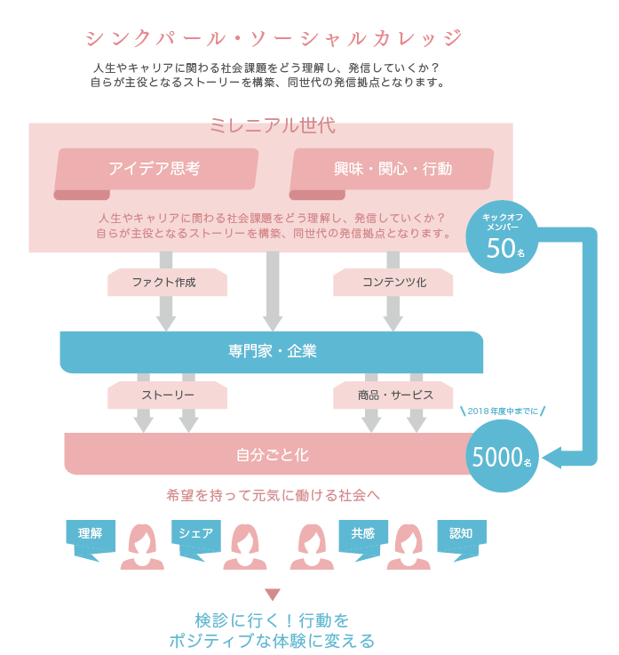
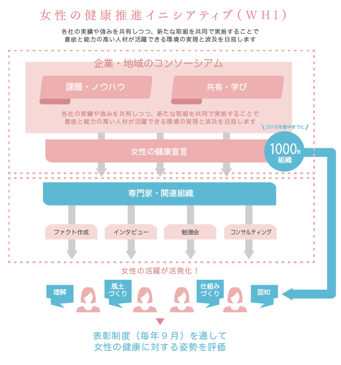
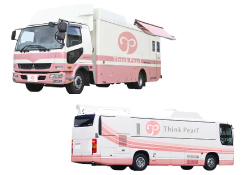
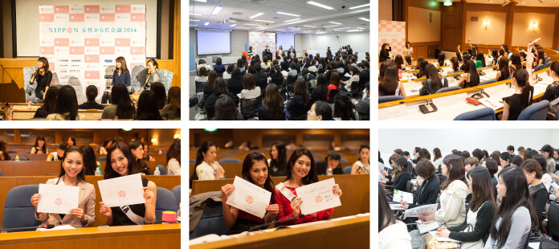
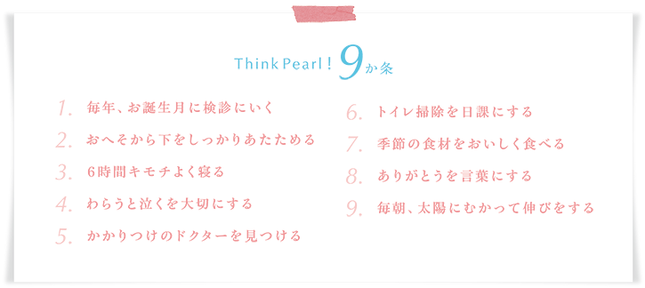
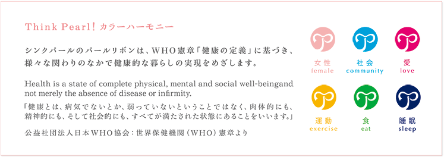

「シンクパール®子宮頸がん無料検診車」を全国に走らせるための基金です。女性からだ会議®、各地域の専門医のからだの相談会等も同時開催し、検診にいく機会の創出を行っています。
※寄付に関するご照会は事務局宛にお願い致します。
info@thinkpearl.jp


社会のニーズもライフスタイルも大きく変化しているなか、ライフスタイルの変化による女性のからだへのダメージが顕在化しています。女性たちがキャリアやライフを自らマネジメントし、社会がその環境としくみを整えて支えていくかが大切であり、女性の健康や予防医療の課題は教育や社会のしくみが進まないと解決できないとも言われています。『女性からだ会議®』のプログラムでは、これから日本に訪れる人生100年時代を個人、家族、組織がどう考えるか、女性の健康を社会全体で考える活動です。
企業・行政の皆様
健康経営・女性活躍推進の研修としてご活用ください。
業素、就労環境等にあわせて、専門家のご紹介やコンサルティングを行っております。
詳しくは事務局までお問い合わせ下さい。
info@thinkpearl.jp

シンクパールでは、健康的でしあわせな暮らしの実現を目指し
WHO平和の憲章に基づき、シンクパールよびかけ9か条を制定しました。
